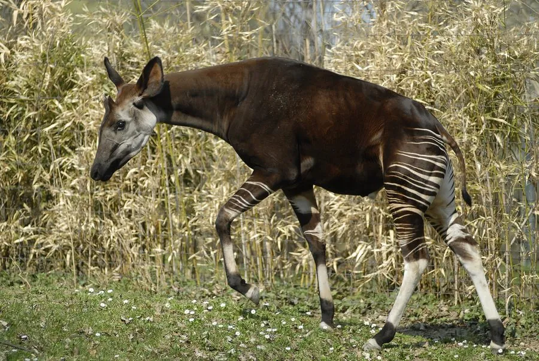

哺乳动物 · 动物界
霍加狓 Okapia johnstoni

中非雨林中的神秘有蹄类，是长颈鹿唯一近亲，腿部有斑马状横纹，长舌蓝黑，直到 20 世纪初才被科学界确认。
- 分类
- 门脊索动物门纲哺乳纲目偶蹄目科长颈鹿科属霍加狓属
- 栖息环境
- 非洲中部的低地雨林与河岸密林，偏好有林下灌木的环境
- 地理分布
- 刚果民主共和国东部热带雨林，个别记录见于乌干达西部
- 保护级别
- IUCN 濒危（EN）
物种志
霍加狓体长 1.9–2.5 米，肩高 1.5–1.8 米，体重 200–350 kg。它的身体为深栗色至黑褐色，四肢和臀部有黑白相间的横纹，形似斑马；头部狭长，耳朵大而灵活，舌头长而呈蓝黑色，眼睛周围有浅色斑纹。
霍加狓仅分布于刚果民主共和国东部的热带雨林，栖息于低地雨林和河岸密林，尤其喜欢有林下灌木和水源的环境。它多在晨昏活动，独居或成对，以树叶、嫩枝、果实和真菌为食，用可伸出口外的长舌卷取较高处的树叶，并会反刍。霍加狓性情隐蔽，听觉灵敏，靠气味标记领地。雌兽妊娠期约 14–15 个月，每胎 1 仔。1901 年，科学界才通过当地俾格米人提供的标本确认这一物种。由于森林砍伐、采矿和非法捕猎，霍加狓被列为濒危，全球数量估计不足 3 万只。
形态与习性
- 食性树叶、嫩枝、果实与真菌，用长舌取食
- 体长1.9–2.5 m，肩高 1.5–1.8 m
- 体重200–350 kg
- 寿命野外约 20–30 年
- 繁殖妊娠期约 14–15 个月，每胎 1 仔
- 舌头长而呈蓝黑色，可伸出口外卷取树叶
- 近亲是长颈鹿科现存唯一的另一个物种
趣味知识
- 霍加狓是长颈鹿唯一现存的近亲，却有着斑马般的腿部横纹。
- 它的舌头长而呈蓝黑色，可以伸出口外卷取高处的树叶。
- 直到 1901 年，科学界才正式确认霍加狓这一物种的存在。
- 霍加狓性情隐蔽，听觉灵敏，靠气味标记领地。